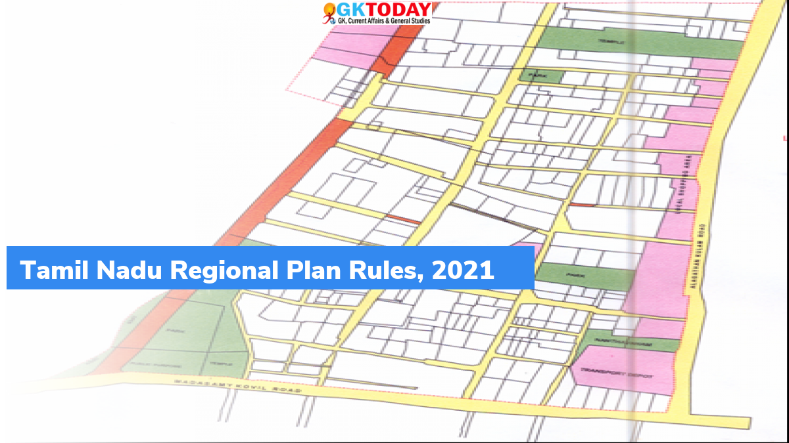

25th National Youth Festival was inaugurated by Prime Minister Narendra Modi in Puducherry on the occasion of birth anniversary of Swami Vivekananda. Highlights of PM’s address On the occasion, prime minister highlighted that; world looks at India’s young demography with hope & faith and India is young in its thoughts & consciousness. India’s thinking and ..
 Government of Tamil Nadu notified the “Regional Plan (Preparation, Publication and Sanction) Rules, 2021” in accordance with the Tamil Nadu Town and Country Planning Act, 1971. Key Points As per notification, the Regional Planning Authority (RPA) should prepare a land-and building-use map for regional planning areas as well as for different parts of regional area, ..